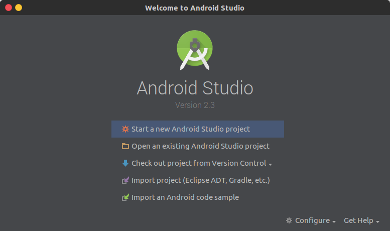
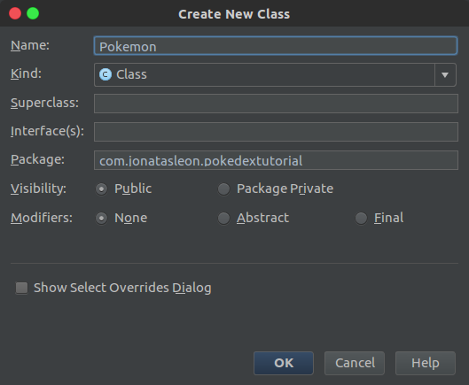

Criando uma Pokedex!
Essa apostila mostra o desenvolvimento passo-a-passo de um aplicação demo de um lista de Pokemons. A função principal do aplicativo será consumir a API PokéAPI, que se trata de uma API sobre Pokemons destinada a fins educacionais e gratuita.
O código desenvolvido neste tutorial está disponível no Github. Fique a vontade para consultá-lo e se esse tutorial de ajudar, recomende aos seus colegas. Gotta Catch 'Em All!
Criando projeto no Android Studio
Ao abrir o Android Studio, uma tela de boas-vindas será exibida(Figura 1), clique em Start a new Android Studio Project.

Figura 1 - Tela Welcome
Agora na tela de criação de um novo projeto(Figura 2), insira o nome da aplicação (Application name), um domínio(Company Domain), para exemplo coloque seu nome seguido de .com, e ao final escolha onde ficará a pasta do projeto(Projeto Location), clique em Next.

Figura 2 - Tela New Project
Como mostrado na Figura 3, deixe apenas selecionado a opção Phone and Tablet, com o Minimum SDK em API 15: Android 4.0.3 (IceCreamSandwich), então clique em Next

Figura 3 - Tela Target Devices
Selecione a opção Add no activity, como mostrado(Figura 4), então clique em Finish

Figura 4 - Tela Add Activity
Após isso, a estrutura de arquivos do seu projeto vai fica assim:

Figura 5 - Estrutura de arquivos
Pronto, agora seu projeto está criado.
Configurando o projeto
Para construirmos estes aplicativo utilizaremos algumas ferramentas para facilitar o desenvolvimento, além de termos que configura-lo para realizar algumas tarefas.
Como o aplicativo irá buscar as informações na internet, temos que informar que ele fará isso no arquivo AndroidManifest.xml. Abra o arquivo e adicione, dentro da tag manifest, o seguinte trecho de código:
<uses-permission android:name="android.permission.INTERNET"/>
Código 1 - Permissão para internet
Abra o arquivo build.gradle e adicione as bibliotecas de design e recyclerview, elas oferecem suporte a dispositivos com versões do Android anteriores ao Android Nougat, adicione também as bibliotecas para parse de dados, GSON e a Retrofit.
dependencies {
compile fileTree(dir: 'libs', include: ['*.jar'])
androidTestCompile('com.android.support.test.espresso:espresso-core:2.2.2', {
exclude group: 'com.android.support', module: 'support-annotations'
})
testCompile 'junit:junit:4.12'
compile 'com.android.support:appcompat-v7:25.3.0'
// libs de compatibilidade
compile 'com.android.support:design:25.3.0'
compile 'com.android.support:recyclerview-v7:25.3.0'
// retrofit, gson, picasso
compile 'com.google.code.gson:gson:2.7'
compile 'com.squareup.retrofit2:retrofit:2.1.0'
compile 'com.squareup.retrofit2:converter-gson:2.1.0'
compile 'com.squareup.picasso:picasso:2.5.2'
}
Código 2 - Adicionando as dependências
Criando nossa primeira Activity
Agora que já fizemos o setup inicial, vamos criar nossa primeira Activity e assim já ter alguma tela para visualizarmos no emulador/celular
Expanda a estrutura de visualização dos arquivos até exibir o nome do pacote, na imagem de exemplo(Figura 6) é com.jonatasleon.pokedex, então clique com o botão direito e vá em New -> Activity -> Empty Activity.
Figura 6 - Estrutura de arquivos
Como na Figura 7, lembre-se de marcar a opção Launcher Activity, então clique em Finish

Figura 7 - Nova Activity
Abra o arquivo activity_main.xml (app/src/main/res/layout/activity_main.xml) e mude para o modo de edição para o modo text, altere o componente ConstraintLayout e adicione um RecyclerView para que o arquivo fique assim:
<?xml version="1.0" encoding="utf-8"?>
<RelativeLayout
xmlns:android="http://schemas.android.com/apk/res/android"
xmlns:tools="http://schemas.android.com/tools"
xmlns:app="http://schemas.android.com/apk/res-auto"
android:layout_width="match_parent"
android:layout_height="match_parent"
app:layout_behavior="@string/appbar_scrolling_view_behavior"
tools:showIn="@layout/activity_main"
tools:context="com.jonatasleon.pokedex.MainActivity">
<android.support.v7.widget.RecyclerView
android:id="@+id/rv_pokemons"
android:layout_width="match_parent"
android:layout_height="match_parent"
android:scrollbars="vertical" />
</RelativeLayout>
Código 3 - Arquivo activity_main.xml
Voltando para o modo Design, é exibido uma prévia de como ficaria o layout.

Figura 8 - Prévia do Layout
Agora adicione uma nova classe, clique sobre o nome do pacote novamente, New -> Java Class, coloque o nome da classe como Pokemon e clique em OK.

Figura 9 - Nova classe
O Pokemon terá, por enquanto, dois atributos, name e type. Adicione dois construtores públicos, o primeiro sem paramêtros, o segundo contendo os atributos criados como paramêtro. Após isso, adicione getters e setters para cada atributo. O código final do arquivo Pokemon.java deve fica da seguinte forma:
package com.jonatasleon.pokedex;
public class Pokemon {
private String name;
private String type;
public Pokemon() {
}
public Pokemon(String name, String type) {
this.name = name;
this.type = type;
}
public String getName() {
return name;
}
public void setName(String name) {
this.name = name;
}
public String getType() {
return type;
}
public void setType(String type) {
this.type = type;
}
}
Código 4 - Pokemon.java
Agora, crie um novo layout. Clique com o botão direito sobre a pasta layout então clique em New > Layout Resource File (Figura 10)
Figura 10 - Pasta layout
Então coloque como nome pokemon_row e em Root Element digite RelativeLayout, aperte OK

Figura 11 - Adiciona layout pokemon_row
Abra o arquivo pokemon_row.xml e deixe-o assim:
<?xml version="1.0" encoding="utf-8"?>
<RelativeLayout
xmlns:android="http://schemas.android.com/apk/res/android"
android:layout_width="match_parent"
android:layout_height="wrap_content"
android:focusable="true"
android:paddingLeft="16dp"
android:paddingRight="16dp"
android:paddingTop="10dp"
android:paddingBottom="10dp"
android:clickable="true"
android:background="?android:attr/selectableItemBackground"
android:orientation="vertical">
<TextView
android:id="@+id/tv_name"
android:textSize="16sp"
android:textStyle="bold"
android:layout_alignParentTop="true"
android:layout_width="match_parent"
android:layout_height="wrap_content" />
<TextView
android:id="@+id/tv_type"
android:layout_below="@id/tv_name"
android:layout_width="match_parent"
android:layout_height="wrap_content" />
</RelativeLayout>
Código 5 - Pokemon row layout
Agora crie uma class chamada PokemonAdapter, essa classe será feito a ponte entre os dados e o layout exibido pela activity, abra o arquivo PokemonAdapter.java e deixo assim:
package com.jonatasleon.pokedex;
import android.support.v7.widget.RecyclerView;
import android.view.LayoutInflater;
import android.view.View;
import android.view.ViewGroup;
import android.widget.TextView;
import java.util.List;
public class PokemonAdapter extends RecyclerView.Adapter<PokemonAdapter.PokeViewHolder> {
private List<Pokemon> pokemonList;
public class PokeViewHolder extends RecyclerView.ViewHolder {
public TextView name, type;
public PokeViewHolder(View itemView) {
super(itemView);
name = (TextView) itemView.findViewById(R.id.tv_name);
type = (TextView) itemView.findViewById(R.id.tv_type);
}
}
public PokemonAdapter(List<Pokemon> pokemonList) {
this.pokemonList = pokemonList;
}
@Override
public PokeViewHolder onCreateViewHolder(ViewGroup parent, int viewType) {
LayoutInflater inflater = LayoutInflater.from(parent.getContext());
View itemView = inflater.inflate(R.layout.pokemon_row, parent, false);
return new PokeViewHolder(itemView);
}
@Override
public void onBindViewHolder(PokeViewHolder holder, int position) {
Pokemon pokemon = pokemonList.get(position);
holder.name.setText(pokemon.getName());
holder.type.setText(pokemon.getType());
}
@Override
public int getItemCount() {
return pokemonList.size();
}
}
Código 5 - PokemonAdapter.java
Abra o arquivo MainActivity.java e deixo modifique o método onCreate:
@Override
protected void onCreate(Bundle savedInstanceState) {
super.onCreate(savedInstanceState);
setContentView(R.layout.activity_main);
recyclerView = (RecyclerView) findViewById(R.id.rv_pokemons);
pokemonAdapter = new PokemonAdapter(pokemonList);
RecyclerView.LayoutManager layoutManager;
layoutManager = new LinearLayoutManager(getApplicationContext());
recyclerView.setLayoutManager(layoutManager);
recyclerView.setItemAnimator(new DefaultItemAnimator());
recyclerView.setAdapter(pokemonAdapter);
}
Código 6 - Método onCreate
Agora o RecyclerView já está implementado, no entanto nenhuma informação é exibida, vamos criar um método que adicione algum dado. Dentro da classe MainActivity crie um método addData:
private void addData() {
Pokemon poke;
poke = new Pokemon("Bulbasaur", "Grama");
pokemonList.add(poke);
poke = new Pokemon("Charmander", "Fogo");
pokemonList.add(poke);
poke = new Pokemon("Squirtle", "Água");
pokemonList.add(poke);
pokemonAdapter.notifyDataSetChanged();
}
Código 7 - Método addData
O código da MainActivity deve ser algo como:
package com.jonatasleon.pokedex;
import android.support.v7.app.AppCompatActivity;
import android.os.Bundle;
import android.support.v7.widget.DefaultItemAnimator;
import android.support.v7.widget.LinearLayoutManager;
import android.support.v7.widget.RecyclerView;
import java.util.ArrayList;
import java.util.List;
public class MainActivity extends AppCompatActivity {
List<Pokemon> pokemonList = new ArrayList<>();
RecyclerView recyclerView;
PokemonAdapter pokemonAdapter;
@Override
protected void onCreate(Bundle savedInstanceState) {
super.onCreate(savedInstanceState);
setContentView(R.layout.activity_main);
recyclerView = (RecyclerView) findViewById(R.id.rv_pokemons);
pokemonAdapter = new PokemonAdapter(pokemonList);
RecyclerView.LayoutManager layoutManager;
layoutManager = new LinearLayoutManager(this);
recyclerView.setLayoutManager(layoutManager);
recyclerView.setItemAnimator(new DefaultItemAnimator());
recyclerView.setAdapter(pokemonAdapter);
addData();
}
private void addData() {
Pokemon poke;
poke = new Pokemon("Bulbasaur", "Grama");
pokemonList.add(poke);
poke = new Pokemon("Charmander", "Fogo");
pokemonList.add(poke);
poke = new Pokemon("Squirtle", "Água");
pokemonList.add(poke);
pokemonAdapter.notifyDataSetChanged();
}
}
Código 8 - MainActivity completa
Ao executar o aplicativo, o resultado esperado seria uma lista com os 3 Pokemons adicionados no método addData.

Figura 12 - Resultado Esperado
Buscando dados na PokéAPI
Agora vamos começar a trazer os dados diretamente da API
Fazendo uma requisição no endereço http://pokeapi.co/api/v1/pokemon/1/, temos os dados do Bulbasaur, de todas a informações enviadas pela API, vamos utilizar o seguinte objeto como exemplo:
{
"attack": 49,
"defense": 49,
"height": "7",
"hp": 45,
"name": "Bulbasaur",
"pkdx_id": 1,
"speed": 45,
"sprites": [
{
"name": "bulbasaur",
"resource_uri": "/api/v1/sprite/1/"
},
{
"name": "bulbasaur",
"resource_uri": "/api/v1/sprite/2/"
},
{
"name": "bulbasaur",
"resource_uri": "/api/v1/sprite/720/"
}
],
"types": [
{
"name": "poison",
"resource_uri": "/api/v1/type/4/"
},
{
"name": "grass",
"resource_uri": "/api/v1/type/12/"
}
],
"weight": "69"
}
Código 9 - Objeto base
Para conseguirmos manipular os dados dentro do aplicativo, temos que criar classes que representem cada conjunto de dados dentro do objeto, então a partir deste objeto, antes de alterar a classe Pokemon identificamos a necessidade de criar duas novas classes, PokeType e Sprite:
package com.jonatasleon.pokedex;
import com.google.gson.annotations.SerializedName;
public class PokeType {
@SerializedName("name")
private String name;
public PokeType(String name) {
this.name = name;
}
public String getName() {
return name;
}
public void setName(String name) {
this.name = name;
}
}
Código 10 - PokeType.java
Agora crie a classe Sprite, assim:
package com.jonatasleon.pokedex;
import com.google.gson.annotations.SerializedName;
public class Sprite {
@SerializedName("name")
private String name;
@SerializedName("resource_uri")
private String resourceUri;
public Sprite(String name) {
this.name = name;
}
public String getName() {
return name;
}
public void setName(String name) {
this.name = name;
}
public String getResourceUri() {
return resourceUri;
}
public void setResourceUri(String resourceUri) {
this.resourceUri = resourceUri;
}
}
Código 11 - Sprite.java
Utilizamos annotations para dizer onde cada atributo do objeto vindo da API será atribuído. Assim, para cada @SerializedName(String) estamos vinculando um valor da API a um atributo de nossas classes.
As declarações dos atributos da classe Pokemon serão alteradas, consequentemente seus getters e setters também. Os atributos ficarão definidos assim(em caso de dúvida, veja o código completo aqui):
package com.jonatasleon.pokedex;
import com.google.gson.annotations.SerializedName;
import java.util.ArrayList;
import java.util.List;
public class Pokemon {
@SerializedName("name")
private String name;
@SerializedName("attack")
private Integer attack;
@SerializedName("defense")
private Integer defense;
@SerializedName("height")
private String height;
@SerializedName("hp")
private Integer health;
@SerializedName("pkdx_id")
private Integer pokedexId;
@SerializedName("speed")
private Integer speed;
@SerializedName("weight")
private String weight;
@SerializedName("sprites")
private List<Sprite> sprites = new ArrayList<>();
@SerializedName("types")
private List<PokeType> pokeTypes = new ArrayList<>();
/*
* O construtor e os getters e setters aqui
*/
}
Código 12 - Alterações em Pokemon.java
Neste momento, classes como MainActivity e PokemonAdapter podem estar apontando algum erro, não vamos nos preocupar com isso agora, isso se deve pela alteração que fizemos no model Pokemon.
Criaremos agora nossa instância da Api: ApiClient.java
package com.jonatasleon.pokedex;
import retrofit2.Retrofit;
import retrofit2.converter.gson.GsonConverterFactory;
public class ApiClient {
public static final String BASE_URL = "http://pokeapi.co/";
private static Retrofit retrofit = null;
public static Retrofit getClient() {
if(retrofit == null) {
retrofit = new Retrofit.Builder()
.baseUrl(BASE_URL)
.addConverterFactory(GsonConverterFactory.create())
.build();
}
return retrofit;
}
}
Código 13 - ApiClient.java
Nossa ApiClient representa o cliente que fará todas as requisições na PokéAPI. Agora precisamos dizer ao ApiClient, onde ele deve buscar as informações, para isso, criaremos nossa interface ApiInterface.
Para criar uma interface, siga os mesmos passos para criar uma classe, mas na tela de inserção do nome da classe, altere Class para Interface.
Figura 13 - Criando interface
O código de ApiInterface.java ficará assim:
package com.jonatasleon.pokedex;
import retrofit2.Call;
import retrofit2.http.GET;
import retrofit2.http.Path;
public interface ApiInterface {
@GET("api/v1/pokemon/{id}")
Call<Pokemon> getPokemon(@Path("id") int id);
}
Código 14 - ApiInterface.java
Com isso estamos dizendo que ao chamar o método getPokemon(int) estamos fazendo uma requisição GET (ver Métodos HTTP) no recurso pokemon/{id}, com o id que será passado como parâmetro.
Agora vamos fazer que nossas requisições apareçam como uma lista de Pokemons no RecyclerView, também, como consequência, vamos corrigir os erros apontados em MainActivity e PokemonAdapter.
Para isso, vamos criar um novo método que colocar todos os names de PokeTypes em uma única String. Abra o arquivo Pokemon.java e adicione o método pokeTypesToString:
/* arquivo Pokemon.js */
public String pokeTypesToString() {
String types = "";
for (int i = 0; i < pokeTypes.size(); i++) {
if(i > 0)
types += ", ";
types += pokeTypes.get(i).getName();
}
return types;
}
Código 15 - Método pokeTypesToString
Agora modifique o método onBindViewHolder na classe PokemonAdapter
@Override
public void onBindViewHolder(PokeViewHolder holder, int position) {
Pokemon pokemon = pokemonList.get(position);
holder.name.setText(pokemon.getName());
holder.type.setText(pokemon.pokeTypesToString());
}
Código 16 - Método onBindViewHolder
Agora temos modificar nosso método addData na classe MainActivity:
private void addData() {
ApiInterface apiService = ApiClient.getClient().create(ApiInterface.class);
for(int i = 1; i <= 30; i++) {
Call<Pokemon> call = apiService.getPokemon(i);
call.enqueue(new Callback<Pokemon>() {
@Override
public void onResponse(Call<Pokemon> call, Response<Pokemon> response) {
if(response.isSuccessful()) {
Pokemon pokemon = response.body();
pokemons.add(pokemon);
pokemonAdapter.notifyDataSetChanged();
Log.i("POKEMON", "Name: " + pokemon.getName());
Log.i("POKEMON", "Attack: " + pokemon.getAttack());
Log.i("POKEMON", "Defense: " + pokemon.getDefense());
Log.i("POKEMON", "Health: " + pokemon.getHealth());
Log.i("POKEMON", "Height: " + pokemon.getHeight());
Log.i("POKEMON", "Weight: " + pokemon.getWeight());
}
}
@Override
public void onFailure(Call<Pokemon> call, Throwable t) {
}
});
}
}
Código 17 - Método addData
Execute o projeto, dependendo da disponibilidade da API, os dados dos 30 primeiros Pokemons irão ser exibidos em nosso RecyclerView, assim
Figura 14 - Pokemons API
Carregando imagens
Para carregar imagens no RecyclerView vamos utilizar a biblioteca Picasso. Sua dependência já foi adicionada ao projeto, observe a seguinte linha no arquivo build.gradle:
compile 'com.squareup.picasso:picasso:2.5.2'
Código 18 - Picasso
Como vamos buscar as imagens a partir dos dados de uma Sprite, teremos que fazer um request no recurso sprite
{
"id": 1,
"image": "/media/img/1383395659.12.png",
"name": "Bulbasaur_blue_red"
}
Código 19 - Resumo dos dados de um recurso sprite
Assim, temos que ter uma classe que represente a resposta desta requisição, criamos então a classe SpriteResponse
import com.google.gson.annotations.SerializedName;
public class SpriteResponse {
@SerializedName("id")
private Integer id;
@SerializedName("image")
private String image;
@SerializedName("name")
private String name;
public SpriteResponse(Integer id, String image, String name) {
this.id = id;
this.image = image;
this.name = name;
}
public Integer getId() {
return id;
}
public void setId(Integer id) {
this.id = id;
}
public String getImage() {
return image;
}
public void setImage(String image) {
this.image = image;
}
public String getName() {
return name;
}
public void setName(String name) {
this.name = name;
}
}
Código 20 - Classe SpriteResponse
E modificamos nossa ApiInterface, adicionando o método getSprite
@GET("{resource_uri}")
Call<SpriteResponse> getSprite(@Path("resource_uri") String resourceUri);
Código 21 - getSprite em ApiInterface
Também temos que alterar o nosso layout de pokemon_row.xml
<?xml version="1.0" encoding="utf-8"?>
<RelativeLayout
xmlns:android="http://schemas.android.com/apk/res/android"
android:layout_width="match_parent"
android:layout_height="wrap_content"
android:focusable="true"
android:paddingLeft="16dp"
android:paddingRight="16dp"
android:paddingTop="10dp"
android:paddingBottom="10dp"
android:clickable="true"
android:background="?android:attr/selectableItemBackground"
android:orientation="vertical">
<ImageView
android:layout_width="64dp"
android:layout_height="64dp"
android:id="@+id/iv_pokemon"
android:layout_alignParentTop="true"
android:layout_alignParentLeft="true"
android:layout_alignParentStart="true" />
<TextView
android:id="@+id/tv_name"
android:textSize="16sp"
android:textStyle="bold"
android:layout_alignParentTop="true"
android:layout_width="match_parent"
android:layout_height="wrap_content"
android:layout_toRightOf="@+id/iv_pokemon"
android:layout_toEndOf="@+id/iv_pokemon" />
<TextView
android:id="@+id/tv_type"
android:layout_below="@id/tv_name"
android:layout_width="match_parent"
android:layout_height="wrap_content"
android:layout_toRightOf="@+id/iv_pokemon"
android:layout_toEndOf="@+id/iv_pokemon" />
</RelativeLayout>
Código 22 - pokemon_row.xml
Agora adicionamos uma ImageView ao layout, então podemos mofificar nosso PokemonAdapter e seu ViewHolder:
public class PokeViewHolder extends RecyclerView.ViewHolder {
public TextView name, type;
public ImageView ivPokemon;
public PokeViewHolder(View itemView) {
super(itemView);
name = (TextView) itemView.findViewById(R.id.tv_name);
type = (TextView) itemView.findViewById(R.id.tv_type);
ivPokemon = (ImageView) itemView.findViewById(R.id.iv_pokemon);
}
}
Código 23 - Classe PokeViewHolder
Agora vamos modificar o método onBindViewHolder:
@Override
public void onBindViewHolder(final PokeViewHolder holder, int position) {
Pokemon pokemon = pokemonList.get(position);
holder.name.setText(pokemon.getName());
holder.type.setText(pokemon.pokeTypesToString());
ApiInterface apiService = ApiClient.getClient().create(ApiInterface.class);
Sprite sprite = pokemon.getSprites().get(0);
String spriteUrl = sprite.getResourceUri();
Call<SpriteResponse> call = apiService.getSprite(spriteUrl);
call.enqueue(new Callback<SpriteResponse>() {
@Override
public void onResponse(Call<SpriteResponse> call, Response<SpriteResponse> response) {
if(response.isSuccessful()){
SpriteResponse spriteResponse = response.body();
String image = "http://pokeapi.co" + spriteResponse.getImage();
Picasso.with(holder.ivPokemon.getContext())
.load(image)
.resize(64, 64)
.into(holder.ivPokemon);
}
}
@Override
public void onFailure(Call<SpriteResponse> call, Throwable t) {
}
});
}
Código 24 - Refatoração onBindViewHolder
Um detalhe importante aqui, observe a linha:
String spriteUrl = sprite.getResourceUri();
Como getResourceUri() retorna algo como /api/v1/sprite/1/ e nossa url base é http://pokeapi.co/, isso pode gerar uma String como http://pokeapi.co//api/v1/sprite/1/, assim gerando um erro em nossa requisição, para evitar isso, vamos refatorar nosso método getResourceUri na classe Sprite:
/* Sprite.java */
public String getResourceUri() {
return resourceUri.substring(1);
}
Código 25 - getResourceUri refatorada
Tudo ocorrendo corretamente, executando o projeto, temos os seguinte resultado:
Figura 15 - Resultado lista com imagens
Abrindo uma nova Activity
Agora vamos crar uma uma activity que mostre informações mais detalhadas ao selecionarmos algum Pokemon. Crie uma nova activity chamada DetailActivity.
Antes de modificarmos o layout de DetailActivity, criaremos a estrutura que realiza a transição de uma activity para outra. Crie uma classe chamada RecyclerTouchListener.
public class RecyclerTouchListener implements RecyclerView.OnItemTouchListener {
private GestureDetector gestureDetector;
private ClickListener clickListener;
public interface ClickListener {
void onClick(View view, int position);
void onLongClick(View view, int position);
}
public RecyclerTouchListener(Context context, final RecyclerView recyclerView, final ClickListener clickListener) {
this.clickListener = clickListener;
gestureDetector = new GestureDetector(context, new GestureDetector.SimpleOnGestureListener() {
@Override
public boolean onSingleTapUp(MotionEvent e) {
return true;
}
@Override
public void onLongPress(MotionEvent e) {
View child = recyclerView.findChildViewUnder(e.getX(), e.getY());
if (child != null && clickListener != null) {
clickListener.onLongClick(child, recyclerView.getChildPosition(child));
}
}
});
}
@Override
public boolean onInterceptTouchEvent(RecyclerView rv, MotionEvent e) {
View child = rv.findChildViewUnder(e.getX(), e.getY());
if (child != null && clickListener != null && gestureDetector.onTouchEvent(e)) {
clickListener.onClick(child, rv.getChildPosition(child));
}
return false;
}
@Override
public void onTouchEvent(RecyclerView rv, MotionEvent e) {
}
@Override
public void onRequestDisallowInterceptTouchEvent(boolean disallowIntercept) {
}
}
Código 26 - Classe RecyclerTouchListener
Diferente do que acontece com a classe ListView é necessário implementar outros meios de capturar o clique em algum item da lista de um RecyclerView. Nossa recém-criada RecyclerTouchListener implementa a interface RecyclerView.OnItemTouchListener, onde através dela podemos capturar o toque em algum item da lista, no entanto, para facilitarmos a utilização desta classe, o construtor da RecyclerTouchListener pede uma implementação de RecyclerTouchListener.ClickListener, ficando mais simples capturarmos o clique.
Agora volte para a MainActivity e abaixo da linha recyclerView.setAdapter(pokemonAdapter), adicione o seguinte trecho que captura o clique do botão inicia uma nova activity.
recyclerView.addOnItemTouchListener(new RecyclerTouchListener(getApplicationContext(), recyclerView, new RecyclerTouchListener.ClickListener() {
@Override
public void onClick(View view, int position) {
Intent i = new Intent(MainActivity.this, DetailActivity.class);
i.putExtra("ID", pokemons.get(position).getPokedexId());
startActivity(i);
}
@Override
public void onLongClick(View view, int position) {
}
}));
Código 27 - addOnItemTouchListener
Agora no arquivo DetailActivity.java, modifique o método onCreate
@Override
protected void onCreate(Bundle savedInstanceState) {
super.onCreate(savedInstanceState);
setContentView(R.layout.activity_detail);
Intent i = getIntent();
Toast.makeText(DetailActivity.this, i.getIntExtra("ID", 0) + "", Toast.LENGTH_SHORT).show();
}
Código 28 - Método onCreate
Antes de executar seu código, garante que o layout activity_detail esteja da seguinte forma:
<?xml version="1.0" encoding="utf-8"?>
<RelativeLayout xmlns:android="http://schemas.android.com/apk/res/android"
xmlns:tools="http://schemas.android.com/tools"
android:layout_width="match_parent"
android:layout_height="match_parent"
android:paddingBottom="@dimen/fab_margin"
android:paddingLeft="@dimen/fab_margin"
android:paddingRight="@dimen/fab_margin"
android:paddingTop="@dimen/fab_margin"
tools:context="com.jonatasleon.pokedex.DetailActivity">
</RelativeLayout>
Código 29 - activity_detail limpa
Agora o id do pokemon é enviado da MainActivity para a DetailActivity. Quando o método onCreate da DetailActivity for executado, ele vai recuperar o id enviado e o exibira na tela através de uma Toast exibida na tela.
Agora que já conseguimos recuperar o id do pokemon selecionado, vamos alterar o arquivo de layout detail_activity, deixando-o assim:
<?xml version="1.0" encoding="utf-8"?>
<RelativeLayout xmlns:android="http://schemas.android.com/apk/res/android"
xmlns:tools="http://schemas.android.com/tools"
android:layout_width="match_parent"
android:layout_height="match_parent"
android:paddingBottom="@dimen/fab_margin"
android:paddingLeft="@dimen/fab_margin"
android:paddingRight="@dimen/fab_margin"
android:paddingTop="@dimen/fab_margin"
tools:context="com.jonatasleon.pokedextutorial.DetailActivity">
<ImageView
android:layout_width="128dp"
android:layout_height="128dp"
android:id="@+id/iv_detail_pokemon"
android:layout_alignParentTop="true"
android:layout_alignParentLeft="true"
android:layout_alignParentStart="true"
android:layout_marginEnd="16dp"
android:layout_marginRight="16dp"
android:layout_marginBottom="16dp"/>
<TextView
android:layout_width="wrap_content"
android:layout_height="wrap_content"
android:textAppearance="?android:attr/textAppearanceLarge"
android:text="@null"
android:id="@+id/tv_detail_name"
android:layout_alignTop="@+id/iv_detail_pokemon"
android:layout_toRightOf="@+id/iv_detail_pokemon"
android:layout_toEndOf="@+id/iv_detail_pokemon" />
<TextView
android:layout_width="wrap_content"
android:layout_height="wrap_content"
android:textAppearance="?android:attr/textAppearanceMedium"
android:text="@null"
android:id="@+id/tv_detail_types"
android:layout_below="@+id/tv_detail_name"
android:layout_toRightOf="@+id/iv_detail_pokemon"
android:layout_toEndOf="@+id/iv_detail_pokemon" />
<LinearLayout
android:layout_width="match_parent"
android:layout_height="wrap_content"
android:layout_below="@+id/iv_detail_pokemon"
android:layout_alignParentLeft="true"
android:layout_alignParentStart="true"
android:orientation="vertical"
android:background="#6000">
<TextView
android:layout_width="wrap_content"
android:layout_height="wrap_content"
android:textAppearance="?android:attr/textAppearanceLargeInverse"
android:text="@null"
android:id="@+id/tv_detail_attack"
android:layout_marginLeft="16dp"
android:layout_marginStart="16dp"
android:layout_marginBottom="8dp"/>
<TextView
android:layout_width="wrap_content"
android:layout_height="wrap_content"
android:textAppearance="?android:attr/textAppearanceLargeInverse"
android:text="@null"
android:id="@+id/tv_detail_defense"
android:layout_marginLeft="16dp"
android:layout_marginStart="16dp"
android:layout_marginBottom="8dp" />
<TextView
android:layout_width="wrap_content"
android:layout_height="wrap_content"
android:textAppearance="?android:attr/textAppearanceLargeInverse"
android:text="@null"
android:id="@+id/tv_detail_speed"
android:layout_marginLeft="16dp"
android:layout_marginStart="16dp"
android:layout_marginBottom="8dp"/>
</LinearLayout>
</RelativeLayout>
Código 30 - detailActivity
Dentro da classe DetailActivity declare os elementos criados no layout:
public class DetailActivity extends AppCompatActivity {
private TextView tvName, tvTypes, tvAttack, tvDefense, tvSpeed;
private ImageView ivPokemon;
/* restante do código */
}
Código 31 - Declaração dos elementos
No método onCreate, vincule as varivéis declaradas aos seus respectivos elementos no layout:
@Override
protected void onCreate(Bundle savedInstanceState) {
super.onCreate(savedInstanceState);
setContentView(R.layout.activity_detail);
tvName = (TextView) findViewById(R.id.tv_detail_name);
tvTypes = (TextView) findViewById(R.id.tv_detail_types);
tvAttack = (TextView) findViewById(R.id.tv_detail_attack);
tvDefense = (TextView) findViewById(R.id.tv_detail_defense);
tvSpeed = (TextView) findViewById(R.id.tv_detail_speed);
ivPokemon = (ImageView) findViewById(R.id.iv_detail_pokemon);
int id = getIntent().getIntExtra("ID", 0);
requestData(id);
}
Código 32 - Declaração dos elementos
Observe as duas últimas linha de código do método onCreate. Agora recuperamos o id do Pokemon passamos ele como paramêtro para o método requestData, vamos criar este método agora.
Ainda no arquivo DetailActivity.java, crie o método para trazer os dados e também exibir uma imagem do Pokemon:
private void requestData(int id) {
final ApiInterface apiService = ApiClient.getClient().create(ApiInterface.class);
Call<Pokemon> call = apiService.getPokemon(id);
call.enqueue(new Callback<Pokemon>() {
@Override
public void onResponse(Call<Pokemon> call, Response<Pokemon> response) {
Pokemon pokemon;
if(response.isSuccessful()) {
pokemon = response.body();
tvName.setText(pokemon.getName());
tvTypes.setText(pokemon.pokeTypesToString());
tvAttack.setText(pokemon.getAttack().toString());
tvDefense.setText(pokemon.getDefense().toString());
tvSpeed.setText(pokemon.getSpeed().toString());
Call<SpriteResponse> callSprite;
Sprite sprite = pokemon.getSprites().get(0);
callSprite = apiService.getSprite(sprite.getResourceUri());
callSprite.enqueue(new Callback<SpriteResponse>() {
@Override
public void onResponse(Call<SpriteResponse> call, Response<SpriteResponse> response) {
SpriteResponse spriteResponse;
if(response.isSuccessful()) {
spriteResponse = response.body();
Picasso.with(ivPokemon.getContext())
.load("http://pokeapi.co" + spriteResponse.getImage())
.resize(128,128)
.into(ivPokemon);
}
}
@Override
public void onFailure(Call<SpriteResponse> call, Throwable t) {
}
});
}
}
@Override
public void onFailure(Call<Pokemon> call, Throwable t) {
}
});
}
Código 33 - Método prepareData
Neste código encadeamos uma chamada dentro de outra, buscando o dados do Pokemon, assim que é recebido, fazer uma requisição dos dados da Sprite e então, quando recebemos a URI da imagem, utilizamos a Picasso para colocar a imagem dentro da imageView que temos no layout.
O resultado pode ser algo como:
Figura 16 - Resultado da activity com detalhes
Cores
Vamos alterar a cor padrão do aplicativo, só para que combine mais com a identidade gráfica de um "produto" voltado para o mundo Pokemon.
Altere o arquivo colors.xml (res > values):
<?xml version="1.0" encoding="utf-8"?>
<resources>
<color name="colorPrimary">#F44336</color>
<color name="colorPrimaryDark">#D32F2F</color>
<color name="colorAccent">#FFEB3B</color>
</resources>
Código 34 - Cores no arquivo colors.xml
Essas cores fazem parte do estilo do Material Design. Para facilitar a geração das cores, utilizei o Material Design Palette.
Como resultado, nossa toolbar foi alterada.
Figura 17- Toolbar vermelha
Resultado Final
Nos passos que seguimos ao longo do tutorial pudemos experimentar vários recursos de programação para Android como RecyclerView(vamos parar de usar ListView, por favor), bibliotecas de terceiros para consumir uma API e carregamento de imagens e parte da estrutura de um aplicativo, contudo ainda tem muita coisa que você pode fazer para adiquirir mais conhecimento, por exemplo:
- Exibir mais informações dos Pokemons;
- Ordenar a ordem que os Pokemons aparecem na lista, (estão aparecendo na ordem que são baixados);
- Melhorar o layout na exibição dos detalhes;
- Utilizar o resource GET pokemon/ para carregar o RecyclerView como uma lista infinita (no tutorial utilizamos o resource GET pokemon/{id or name}/ para carregar a lista; e
- Disponibilizar isso de volta para a comunidade, assim podemos aprender todos junto.
Agora aproveite seu novo APP
Figura 17- Resultado Final